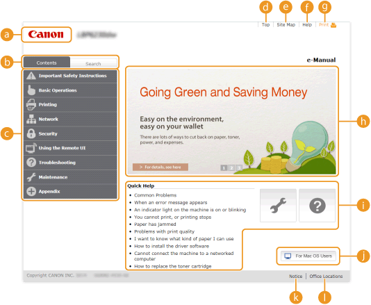
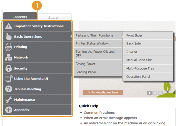
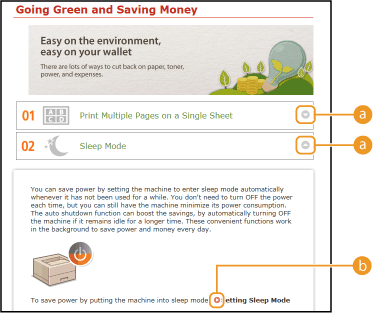
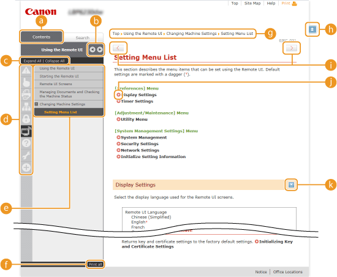
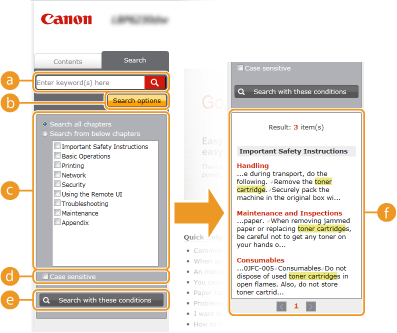
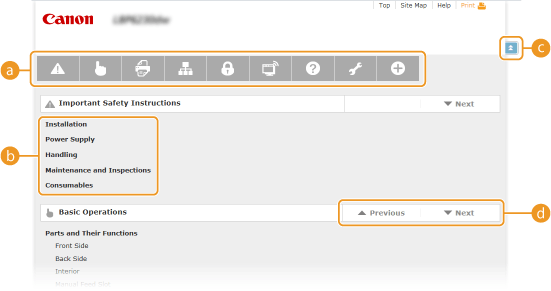

Screen Layout of the e-Manual
The e-Manual is divided into different screens, and the content of each screen varies.
Top Page
This page appears when the e-Manual is started.

 Canon
CanonClick to return to the top page from any other page.
 [Contents] tab/[Search] tab
[Contents] tab/[Search] tabClick to toggle the display between the [Contents] tab and [Search] tab.
 Contents
ContentsDisplays the titles of chapters ( ). Place the mouse pointer over one of the titles to display the topics in that chapter on the right. Click a topic to display its page.
). Place the mouse pointer over one of the titles to display the topics in that chapter on the right. Click a topic to display its page.
). Place the mouse pointer over one of the titles to display the topics in that chapter on the right. Click a topic to display its page.
 [Top]
[Top]Click to return to the top page from any other page.
[Site Map]
Click to display the titles of all e-Manual topics.
[Help]
Click to display information on how to view the e-Manual, how to perform a search, and other information.
[Print]
Click to print the currently displayed topic page.
 Feature Highlights
Feature HighlightsThis page provides a variety of practical examples of ways to use the machine. Click // to toggle the display of practical examples by category, or click the sliding display for more information about each category. The sliding display can be stopped by moving the pointer onto it. Feature Highlights
 [Quick Help]/[Troubleshooting]/[Maintenance]
[Quick Help]/[Troubleshooting]/[Maintenance]Click to view how to solve problems or maintain the machine.
[For Mac OS Users]
Click to view precautions when using Mac OS.
[Notice]
Click to view important information you should know when using the machine.
 [Office Locations]
[Office Locations]Click to display contact information for any inquiries about the machine.
Feature Highlights
This page provides a variety of practical examples of ways to use the machine.

 /
/Click to expand the window to show the information. Click again to collapse the window.
Click to display the corresponding topic page.
Topic Page
Topic pages contain information about how to configure and use the machine.

[Contents]Chapter icons and topic titles are displayed in this tab.
 /
/The [Contents] tab can be widened and narrowed.
[Expand All]/[Collapse All]Click [Expand All] to display all of the subsections of all topics. Click [Collapse All] to close all of the subsections of all the topics.
Chapter iconsClick a chapter icon to navigate to the top of the corresponding chapter.
Topics
Displays the topics of the selected chapter. If "+" is displayed on a topic, clicking it displays the subsections of that topic. Click "-" to close an expanded topic.
[Print all]
All pages of the selected chapter are opened in a separate window. You can print them as necessary.
Navigation
This shows which chapter topic you are currently viewing.

Click to return to the page top.
 /
/
Click to display the previous or next topic.
Click to jump to the corresponding page. To return to the previous page, click the "Back" button on your Web browser.

Click to display hidden detailed descriptions. Click again to close the detailed descriptions.
Search Tab
This tab contains a text box to perform a search and find the page you are looking for.

[Enter keyword(s) here]Enter one or more keywords and click to display the search results in a results list. You can enter a phrase to find pages that contain all of the words in the phrase. To find the exact phrase, enclose it in double quotation marks.
[Search options]Click to specify search conditions such as the scope of the search and case sensitivity.
Search scope selectorYou can use this to select the individual chapters to search. This allows you to search more efficiently, when you can predict the chapters containing the topic that you are looking for.
Search options selectorSelect the check box to make your search case-sensitive.
[Search with these conditions]
and specify the conditions. After setting them, press this to perform the search and display the results in the [Result] list. Result list
This displays pages that contain the specified keywords. From the results, locate the page you are looking for and click the topic title of the page. If the results cannot be displayed on one page, click / or a page number to display the results on the corresponding page.
or a page number to display the results on the corresponding page.
or a page number to display the results on the corresponding page. Site Map
This page displays the titles of all topics in the e-Manual.

Chapter iconsClick to jump to the table of contents of the selected chapter.
Topic titlesDisplays titles and topics. Click a title to jump to the corresponding topic page.
Click to return to the page top.
 /
/
Click to go to the previous or next chapter.